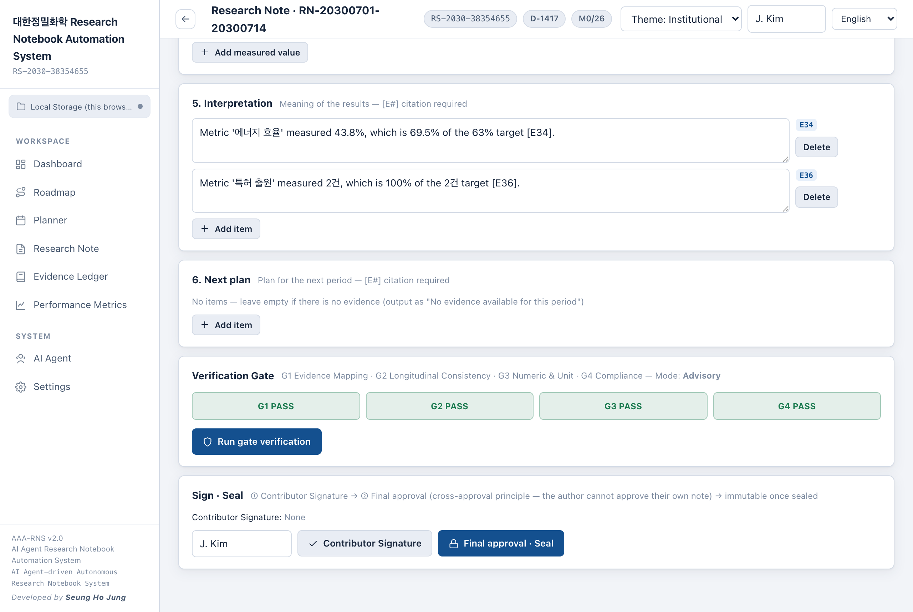

RESEARCH NOTEBOOK · OFFLINE
It refuses to seal
a claim your evidence
doesn't support.
Drafts each note from your own lab logs, links every
sentence to an evidence ID, and blocks the rest.
No server
No cloud
한국어 · English · 日本語
Apache-2.0
AAA-RNS · Developed by Seung Ho Jung